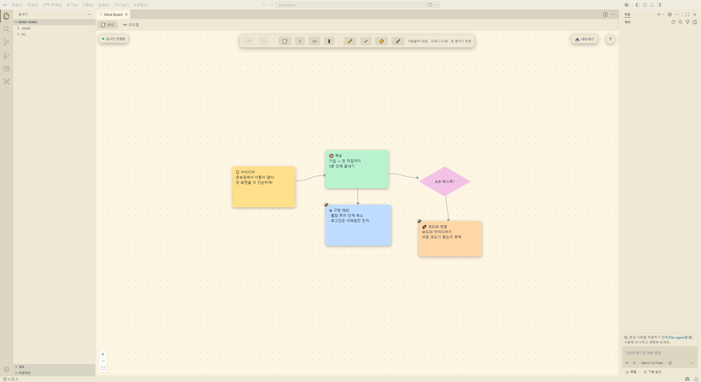
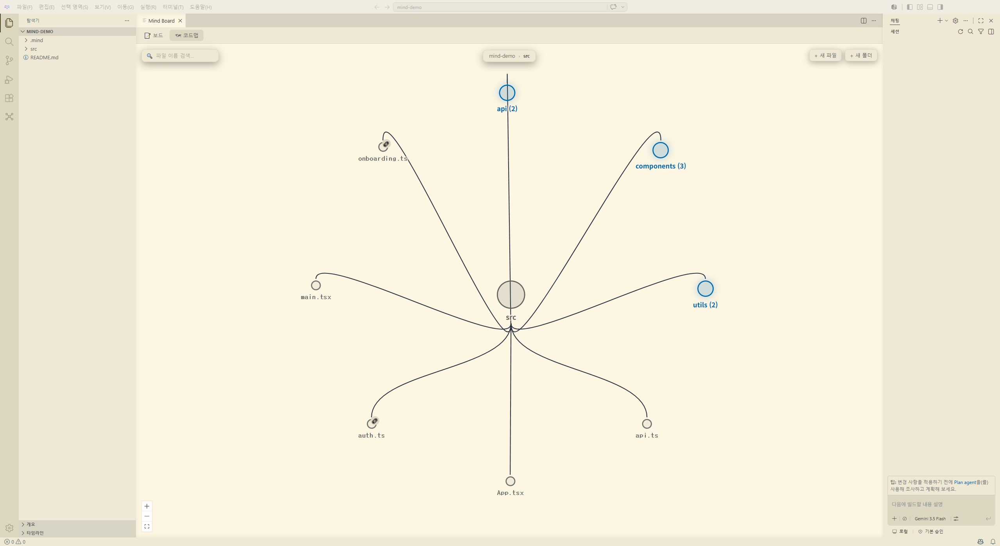

화이트보드에 생각을 펼치고, 그 자리에서 AI와 함께 코드로 만드세요. 기획과 개발 사이의 벽이 사라집니다.

따로 놀던 도구들을 오가며 흘리던 맥락을, Mind는 한곳에 모읍니다.
메모·도형·화살표·펜, 그리고 PDF·Word·PPT까지 펼쳐놓는 무한 화이트보드. 열어둔 폴더에 자동 저장됩니다.
프로젝트 구조를 지도로 보고, 보드의 아이디어를 코드 파일과 양방향으로 연결하세요. 코드에서 보드로, 보드에서 코드로.
Claude·GPT·Gemini 중 원하는 모델로 대화하고, 에이전트 모드에서 파일 생성·수정까지. 오픈소스 VS Code(Code-OSS) 기반의 완전한 코드 에디터 위에서.
코드 한 줄 공유하면 여러 명이 같은 보드를 동시에 편집합니다. 커서까지 실시간으로.
보드의 메모를 코드 파일에 연결하면, 에디터에서 그 파일을 열 때마다 "보드에서 보기" 링크가 나타납니다. 왜 이 코드를 짰는지가 항상 한 클릭 거리에 있습니다.

Mind는 구독형 AI 중개상이 아닙니다. 쓰는 만큼만 내는 내 키(BYOK)로 동작합니다.
Gemini·Claude·GPT 키는 이 컴퓨터에 암호화되어 저장되고, 외부로 전송되지 않습니다.
보드도 코드도 전부 내 폴더의 파일입니다. 클라우드 강제 없음, 잠금(lock-in) 없음.
익명 사용 통계는 기본 꺼짐(선택 동의), 익명 오류·크래시 리포트는 기본 전송되지만 설정에서 끌 수 있습니다. 코드 내용은 어떤 경우에도 수집하지 않습니다.